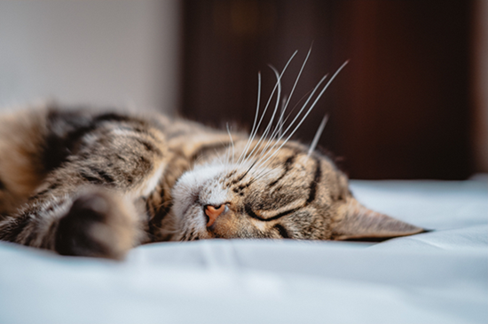

Início | Raças e Curiosidades
Os gatos são animais de companhia muito populares em todo o mundo. São independentes, curiosos e muito carinhosos com quem gostam.

Aqui ficam algumas das razões:
Queres saber mais? Vê a página seguinte.